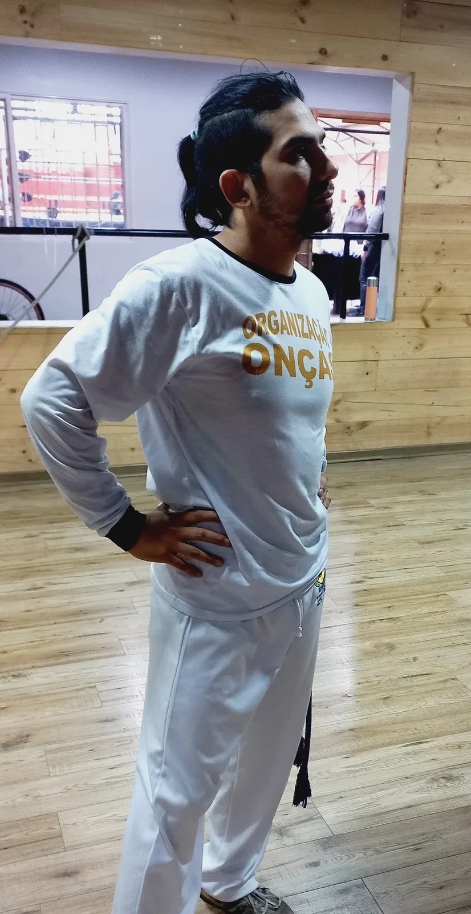

Grau 2° · 10.ª graduación
Profesor Camilo Donoso
Trayectoria
Comenzó a practicar capoeira a los 7 años, alrededor del año 2000, en un taller comunal junto a su hermano Felipe. Desde entonces, la capoeira forma parte de su vida.
Formación
Se formó en el grupo Sul da Bahia, bajo la guía de Mestre Zequinha, con quien mantiene hasta hoy una excelente relación.
Formación Profesional
Profesor de Filosofía - UMCE
Técnico Deportivo - AIEP